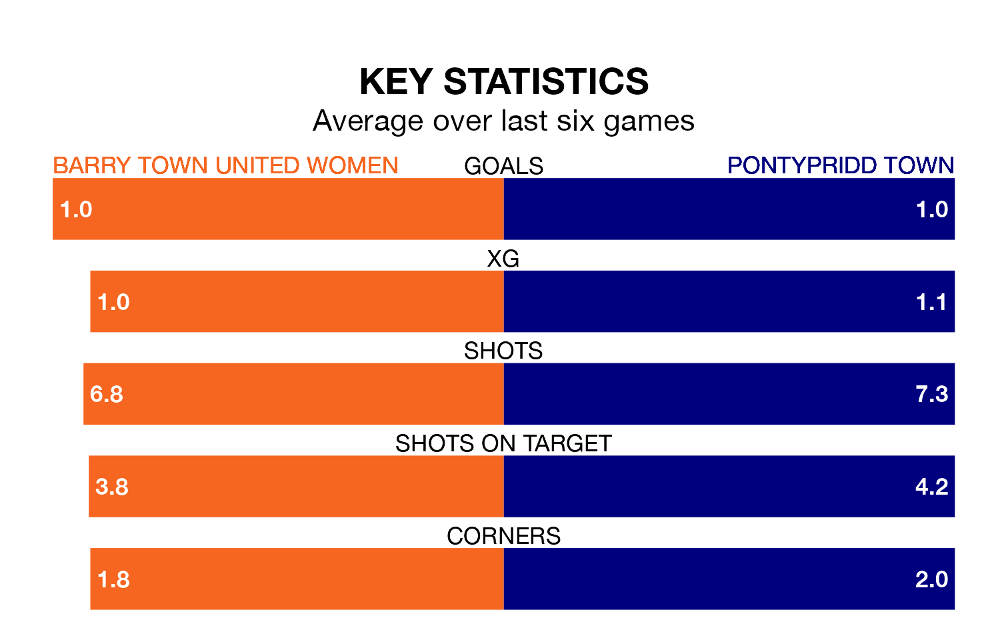

Sunday's late match sees two relegation candidates play each other, as sixth-ranked Barry Town United Women host bottom of the table Pontypridd Town.
Barry Town United have picked up 12 points from their first 12 Welsh Premier Women's League games, with four wins and no draws.
That is eight points more than Pontypridd have collected, having won one and drawn one.
In the last 10 years, Barry Town United and Pontypridd have played each other on nine occasions. Barry Town United won four of them, Pontypridd three, and they drew twice.
On average, Barry Town United scored 1.9 goals and Pontypridd 1.7 in those matches.
Their last meeting was on November 5, when Barry Town United won 3-0 away.
Barry Town United are in disappointing form in Welsh Premier Women's League, with two wins and four losses from their last six games.
With a win and a draw over that period, Pontypridd's form is slightly worse – they have taken four points from 18, compared to the hosts' six.
With nine goals in 13 games so far this season, Town are the league's lowest scorers with 0.7 goals per game. And they are conceding more than average, letting in 30 goals at a rate of 2.3 per game.
Barry Town United are also below average scorers, with 1.2 goals per game, compared to a league average of 1.8. They have conceded 2.7 goals per game.
Barry Town United's last match was on February 4, a 3-1 loss against Cardiff City.
Pontypridd lost 3-2 against Wrexham Women last time out, also on February 4.
Updated: 11:47 (UTC), 05/02/24